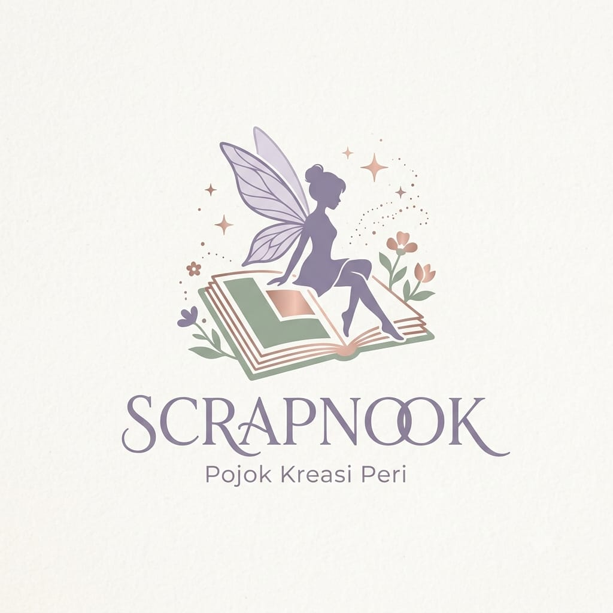

Lahir dari kecintaan terhadap seni jurnal kreatif dan kerajinan tangan, ScrapNook hadir sebagai teman setia bagi siapapun yang ingin merangkai memori hidupnya menjadi sebuah karya visual yang hidup. Kami percaya bahwa setiap momen, sekecil apapun itu, layak untuk diabadikan dengan sentuhan kehangatan dan keindahan.
Di sini, kami menyediakan kurasi lengkap perlengkapan scrapbook berkualitas tinggi—mulai dari washi tape bermotif magis, kertas vintage, stempel artistik, hingga berbagai pernak-pernik DIY ala negeri peri.
"It’s not just pasting paper; it’s preserving the magic of moments we never want to forget."”